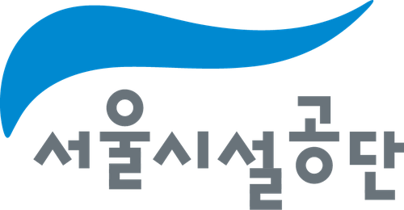
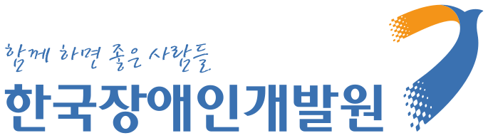
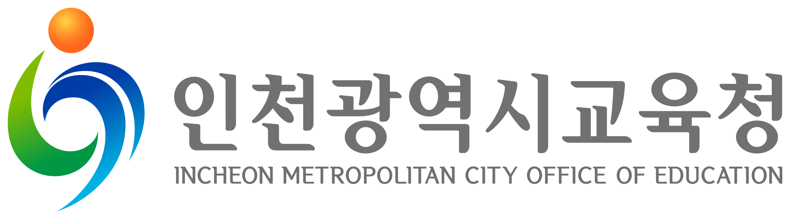
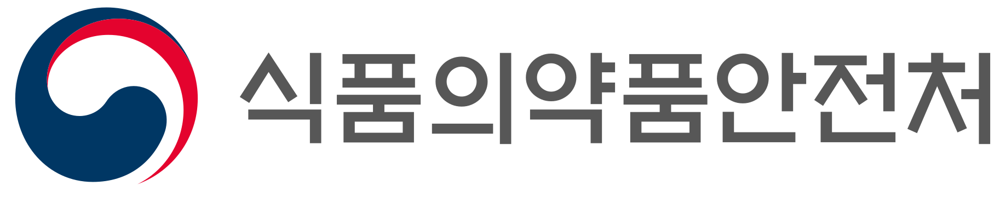

변호사 부효준
국가연구개발사업 참여제한 · 연구비 환수 · 제재부가금 · 행정쟁송
국가로펌 출신 · 소송·자문 약 3,300건처분의 과정과 변곡점을
제대로 아는 변호사입니다.
국가로펌인 정부법무공단(KGLS)을 거쳐 개업한 뒤까지 행정쟁송 한 분야를 걸어온 변호사입니다. 지금은 중앙행정기관·지방자치단체·공공기관의 고문변호사이자 제재처분·소청·행정처분을 심의하는 위원회의 위원입니다. 이러한 압도적인 전문성을 바탕으로 다양한 쟁송사건에서 의뢰인들을 대리합니다. 국가연구개발사업 참여제한·제재부가금·환수, 징계·인사, 인허가·영업정지·과징금, 국가계약·지방계약, 국가배상·손실보상, 그리고 이와 관련된 형사사건까지 하나의 흐름으로 담당합니다.
010-8506-8685 전화 02-588-8685 boo@keumseonglaw.com
주요 수행 사례
전문성은 말보다 실제 승소사례로 보여 드립니다. 판결·결정·재결을 받은 주요 사건의 승소사례를 공개하였고, 모두 부효준 변호사가 담당변호사로 직접 수행한 사건입니다.
분야별로 보기
국가연구개발사업 관련 사기 혐의 사건 변호 (경찰 불송치)
충청남도경찰청 · 담당변호사 부효준
국가연구개발사업과 관련하여 사기 혐의로 입건된 피의자들을 수사 단계에서 변호하여, 증거불충분 혐의없음 불송치 결정을 받은 사건입니다.
자세히 →국가연구개발사업 연구개발비 회수금 미납을 이유로 한 참여제한처분 취소소송
대전지방법원 2025구합200493 · 담당변호사 부효준
과제 중단에 따른 정산으로 통보된 연구개발비 회수금을 납부하지 않은 연구개발기관에 대하여 회수금을 납부할 때까지 참여를 제한한 처분에 관하여, 처분서에 적힌 회수금액이 독립한 '회수금 부과처분'으로서 취소소송의 대상이 되는지와 「국가연구개발혁신법」 제32조 제1항 제6호, 같은 법 시행령 [별표 6]에 따른 참여제한의 재량권 일탈·남용 여부가 다투어진 사건입니다. 회수금 부과처분의 취소를 구하는 부분은 각하되고, 참여제한처분 취소청구는 받아들여지지 않았습니다.
자세히 →공공재정환수법상 부정이익 환수·제재부가금 부과처분 취소소송
수원지방법원 2025구합61864 · 기업 대표자(처분 상대방) 대리 · 담당변호사 부효준
지방자치단체 출연기관의 창업기업 사업화 지원금을 둘러싸고 그 기관의 장이 기업 대표자 개인에게 한 「공공재정 부정청구 금지 및 부정이익 환수 등에 관한 법률」상 부정이익 환수처분과 제재부가금 부과처분을 다툰 사건입니다. 출연기관의 장이 같은 법상 처분권한을 가진 행정청에 해당하는지, 지원금을 받은 법인이 아닌 대표자 개인을 처분의 상대방으로 삼은 것이 적법한지, 지원 협약이 지방계약법의 적용을 받는 계약인지 등이 쟁점이었고, 처분권한의 부존재와 처분 상대방의 오인을 이유로 두 처분이 모두 취소되었습니다.
자세히 →정부 지원사업 실증설비 처분 관련 보조금법 위반 혐의 사건 변호 (경찰 불송치)
충북청주흥덕경찰서 · 피의자(지원사업 주관기업 대표) 변호 · 담당변호사 부효준
정부 지원사업의 주관기업이 실증 목적으로 설치한 설비를 승인 없이 처분하였다는 혐의(「보조금 관리에 관한 법률」 위반)로 수사의뢰된 기업 대표를 수사 단계에서 변호하여, 범죄가 인정되지 않는다는 혐의없음 불송치 결정을 받은 사건입니다.
자세히 →국가연구개발사업 제재부가금·연구개발비 환수처분 취소소송
대전지방법원 2024구합206998 · 담당변호사 부효준
실질적인 연구개발 없이 구입한 설비를 자체 개발한 것처럼 연구개발자료를 작성·제출하고 연구개발비를 과제와 무관한 용도로 사용하였다는 이유로 내려진 제재부가금 부과처분과 연구개발비 환수처분에 관하여, 「국가연구개발혁신법」 제31조 제1항 제1호·제2호·제5호 처분사유의 존부와 중복 적용 여부, 환수대상 연구개발비의 범위, 재량권 일탈·남용이 다투어진 사건입니다. 제재부가금 부과처분은 전부 적법하다고 판단되었고, 환수처분은 환수금액의 약 7%에 해당하는 부분만 취소되었습니다.
자세히 →제재부가금 부과·보조금 지급제한 처분 취소청구 행정심판 및 취소소송 (1·2·3심)
중앙행정심판위원회 2024-11047 · 서울행정법원 2024구합89856 · 서울고등법원 2025누7538 · 대법원 2026두31417 · 담당변호사 부효준
「보조금 관리에 관한 법률」 제33조의2에 따른 제재부가금 부과처분과 보조금 지급제한 처분에 관하여, 제재부가금 산정의 기준이 되는 금액(반환을 명한 보조금 총액)과 감경 여부, 재량권 일탈·남용이 다투어진 사건입니다. 중앙행정심판위원회의 재결에 이어, 취소소송에서도 1심과 항소심을 거쳐 대법원까지 처분의 적법성이 확정되었습니다.
자세히 →
등록된 사례가 없습니다.
경력
2026. 10. 기준 · 위촉장을 누르면 크게 볼 수 있고, 로고를 누르면 그 기관의 누리집이 열립니다.
경력 · 학력 · 수상
제51회 사법시험 합격(2009) · 사법연수원 제41기 수료(2012) · 법무부 법무실 국가송무과 · 대한법률구조공단 법무관(2012 ~ 2015) · 정부법무공단(KGLS) 변호사(2015 ~ 2021) — 국가·지방자치단체·공공기관의 행정·국가·헌법·민사소송과 법률자문 약 1,500건 · 법률사무소 비앤케이 대표변호사(2021 ~ 2024) · 법무법인(유한) 금성 구성원변호사(2024. 10. ~ 현재)
고려대학교 법학과 졸업(2009) · 고려대학교 대학원 법학과 석사과정, 행정법(2012) · 법무부장관 표창, 국가소송 업무 수행 유공(2014) · 경력 · 학력 · 수상 자세히 →
법률고문 위촉 중앙행정기관 · 지방자치단체 · 공공기관 약 20곳
처분을 만드는 기관들이 법률 판단을 맡기는 변호사라는 뜻입니다. 처분청이 이 가운데 하나인 사건은 맡지 않습니다.
중앙행정기관 · 지방자치단체
- 교육부고문변호사2026. 7. ~ 현재 · 위촉장 2026. 7. 1. ~ 2028. 6. 30.
- 기상청고문변호사2026. 3. ~ 현재 · 위촉장 2026. 3. 27. ~ 2028. 3. 26.
- 행정안전부고문변호사2025. 2. ~ 현재 · 위촉장 2025. 2. 6. ~ 2027. 2. 5.
- 문화체육관광부고문변호사2024. 6. ~ 현재 · 위촉장 2026. 6. 17. ~ 2028. 6. 16.
- 서울특별시법률고문2023. 10. ~ 현재 · 재위촉 2025. 10. 1. ~ 2027. 9. 30.
- 중소벤처기업부고문변호사2023. 7. ~ 현재 · 위촉장 2026. 7. 1. ~ 2028. 6. 30.
- 기후에너지환경부고문변호사 (구 환경부)2023. 1. ~ 현재 · 위촉장 2025. 1. 1. ~ 2026. 12. 31.
- 보건복지부고문변호사2023. 1. ~ 현재 · 위촉장 2025. 1. 1. ~ 2026. 12. 31.
- 농림축산식품부자문변호사2022. 8. ~ 현재 · 위촉장 2025. 8. 11. ~ 2027. 8. 10.
공공기관 · 공기업 · 단체
- 충남대학교병원CNUH · 법률고문2026. 5. ~ 현재
- 한국환경공단법률고문2026. 2. ~ 현재 · 위촉장 2026. 2. 1. ~ 2027. 1. 31.
- 대한체육회고문변호사2025. 6. ~ 현재 · 위촉장 2025. 6. 5. ~
- 서울주택도시개발공사SH · 법률고문2024. 6. ~ 현재 · 위촉장 2024. 6. 1. ~ 2026. 12. 31.

서울시설공단법률고문2024. 1. ~ 현재 · 위촉장 2026. 1. 1. ~ 2027. 12. 31.- 국가과학기술연구회NST · 출연(연) 통합 법무고문2023. 8. ~ 현재 · 위촉장 2025. 8. 16. ~ 2027. 8. 15.
- 주식회사 에스알SR · 법률고문2023. 7. ~ 현재 · 위촉장 2025. 7. 1. ~ 2027. 6. 30.
- 축산물품질평가원자문변호사2023. 6. ~ 현재 · 위촉장 2025. 6. 1. ~ 2027. 5. 31.
- 한국환경산업기술원KEITI · 고문변호사2021. 8. ~ 현재 · 위촉장 2025. 8. 1. ~ 2027. 7. 31.
- 주택도시보증공사HUG · 법률고문2021. 7. ~ 현재 · 위촉장 2023. 9. 14. ~ 2025. 6. 30.
- 중소기업기술정보진흥원TIPA · 법률고문2021. 6. ~ 현재
임기를 마친 위촉 과학기술정보통신부 고문변호사(2022. 9. 1. ~ 2024. 8. 31.) · 인천광역시교육청 고문변호사(2021. 9. 16. ~ 2023. 9. 15.) · 서천군 고문변호사(2021. 9. 1. ~ 2023. 9. 1.) · 그랜드코리아레저 주식회사(GKL) 법률고문(2021. 11. ~ 2025. 12.) · 새만금개발공사 법률고문(2022. 3. ~ 2023. 12.) · 위촉장 보기 →
위원회 제재처분 · 소청 · 행정처분 심의 위원
처분을 심의하는 자리에서 본 기준이 처분을 다투는 사건의 출발점입니다.
현재 활동 중인 위원회
- 과학기술정보통신부 연구자권익보호위원회위원 · 제재처분 재검토회의 안건 사전검토·심의2025. 4. ~ 현재 · 위촉장 2025. 4. 18. ~ 2027. 4. 17.
- 중소벤처기업부 국가연구개발혁신법 제재처분 재검토위원회위원 · 참여제한·제재부가금·환수 처분의 재검토 심의2022. 2. ~ 현재

한국장애인개발원청렴시민감사관 · 공직윤리옴부즈만 심사2024. 8. ~ 현재 · 위촉장 2024. 8. 12. ~ 2026. 8. 11.- 한국환경산업기술원 정보공개심의회위원 · 정보공개 청구의 공개·비공개 결정 심의2025. 8. ~ 현재 · 위촉장 2025. 8. 28. ~ 2027. 8. 27.

인천광역시교육소청심사위원회위원 · 교원의 징계·불이익처분에 대한 소청 심사2026. 1. ~ 현재 · 위촉장 2026. 1. 1. ~ 2028. 12. 31.
식품의약품안전처 행정처분심의위원회위원 · 영업정지·과징금 등 행정처분의 적정성 심의2026. 5. ~ 현재 · 위촉장 2026. 5. 7. ~ 2028. 5. 6.- 한국전력공사 공정계약심의위원회전문심의위원 · 부정당업자 제재·계약분쟁 심의2026. 6. ~ 현재 · 위촉장 2026. 6. 16. ~ 2028. 6. 15.
임기를 마친 위원회 인천광역시 행정심판위원회 위원(2018. 1. ~ 2024. 1.) · 중소벤처기업부 국민제안심사위원회 위원(2023. 1. ~ 2025. 1.) · 한국산업단지공단 부동산개발 자문·평가위원(2022. 1. 1. ~ 2024. 12. 31.) · 서울특별시 종로구 공유재산심의회 위원(2021. 8. ~ 2024. 5.) · 제4대 과천시체육회장 선거운영위원회 위원(2022. 11. 23. 위촉) · 과천시 정비구역 등 해제 실무위원회 위원(2017. 1. 6. ~ 2019. 1. 5.) · 법무부 제57회 사법시험 제1차시험 검토위원(2015. 2. 26. 위촉) · 한국남동발전 계약심의위원회 위원(2019. 11. ~ 2023. 10.) · 스마트제조혁신추진단 제재 이의·평가위원회 위원(2021. 6. ~ 2022. 6.) · 서울특별시 종로구 계약심의위원회 위원(2021. 8. ~ 2022. 7.) · 법무부 변호사시험 선택형 문제은행 출제위원(2020. 8.) · 위촉장 보기 →
강의 법무부 법무연수원 국가송무과정 — 집행정지(2021. 12.) · 대한법률구조공단 직무교육 — 행정소송(2023. 08.) · 인천광역시교육청 교육연수원 직무교육 — 민사소송, 행정절차법(2023. 09. ~ 현재) · 서울지방변호사회 의무연수 — 국가연구개발혁신법(2024. 08.) · 자세히 →
언론보도
수행한 사건의 판결·결정이 보도된 최근 기사입니다. 지난 사건 보도와 토론회·위원회·강의 기사 등 52건 전체는 언론보도 페이지에 있습니다.
수행 사건 보도
- 2026. 1. 3.
- 리걸타임즈[행정] '콘택트렌즈 온라인 판매 중개 플랫폼' 규제샌드박스 지정 적법서울행정법원 2024구합69371 판결 보도 — "피고는 법무법인 금성이 대리했다." — 관련 사례: ICT 규제샌드박스 실증특례 지정처분 취소소송 (콘택트렌즈 온라인 판매 중개 플랫폼)
- 2024. 6. 9.
- 한국경제[단독] 안경업계, '콘택트렌즈 온라인 판매 추진' 정부 상대 집단소송서울행정법원 2024구합69371 ICT 규제샌드박스 실증특례 지정처분(콘택트렌즈 온라인 판매 중개 플랫폼) 취소소송 제기 보도 — 관련 사례: ICT 규제샌드박스 실증특례 지정처분 취소소송 (콘택트렌즈 온라인 판매 중개 플랫폼)
- 2023. 12. 16.
- 약사공론한약사약국 화상투약기…법원, 집행정지서 규제특례 취소까지 '각하'서울행정법원 2022구합80589 ICT 규제샌드박스 실증특례 지정처분(일반의약품 화상 판매기) 취소소송 판결 보도 — 관련 사례: ICT 규제샌드박스 실증특례 지정처분 취소소송 (일반의약품 화상 판매기)
다루는 사건
처분의 종류에 따라 다투는 길이 다릅니다. 열 영역 모두 직접 다루어 온 사건입니다. 분야 이름을 누르면 자세한 설명과 다룬 사건이, 단추를 누르면 그 분야의 판결문이 열립니다.
-
국가연구개발 제재처분
참여제한·연구개발비 환수·제재부가금 처분을 사전통지 단계의 재검토 요청부터 취소소송·집행정지까지 다툽니다. 국가연구개발사업과 그 제재처분은 「국가연구개발혁신법」에 따르며, 이 처분을 심의하는 과학기술정보통신부 연구자권익보호위원회와 중소벤처기업부 제재처분 재검토위원회의 위원입니다.
20일 사전통지를 받은 날부터 재검토 요청 의견 제출30일 처분 통보를 받은 날부터 제재부가금·환수금 납부90일 처분이 있음을 안 날부터 취소소송 제기 — 집행정지도 함께
-
제재부가금 · 환수
보조금법의 교부결정 취소·환수·제재부가금·지급제한과 공공재정환수법의 부정이익 환수·제재부가금(최대 5배)·명단 공표를 다툽니다.
-
공무원 · 교원 인사처분
파면·해임·정직 등 징계와 직위해제·면직·임용·승진 처분을 소청심사와 행정소송으로 다툽니다.
-
인허가 · 면허 · 자격 처분
지정·승인의 거부와 취소, 면허·자격 정지, 영업정지·업무정지와 그에 갈음하는 과징금을 다툽니다.
-
손실보상
공익사업으로 토지·건물·영업이 수용되거나 제한될 때의 보상금 증액, 잔여지·영업손실·하천구역 편입토지 보상, 이주대책 분쟁을 다룹니다.
-
그 밖의 행정처분
출국금지·난민 인정, 정보공개 거부, 취득세·변상금·부담금 부과, 철거명령·대집행 계고, 인가·감사, 학교폭력 조치까지 종류는 달라도 같은 틀로 다툽니다.
-
정부출연금 · 보조금 형사사건
연구개발비·보조금의 부정집행에 뒤따르는 사기·보조금법 위반·업무상 횡령 사건을 수사 단계부터 공판까지 행정제재 대응과 한 흐름으로 맡습니다.
-
국가계약법 · 지방계약법
입찰 무효·낙찰자 결정, 계약금액 조정(물가변동·설계변경·공사기간 연장 간접비), 계약의 해제·해지, 부정당업자 입찰참가자격 제한, 입찰담합 손해배상을 다룹니다.
-
국가배상
공무원의 직무상 불법행위와 도로·하천 같은 영조물의 설치·관리 하자로 인한 국가배상청구를 수행합니다.
-
법률자문 · 법령 해석
중앙행정기관·지방자치단체·공공기관 약 20곳의 고문변호사로서 인사·노무, 법령 해석·입법, 계약서·협약서 검토 등 법률자문 약 1,300건을 처리했습니다.
상담 문의
전화나 이메일로 연락하시거나, 아래 온라인 상담 신청서를 보내 주십시오. 오시는 길과 처음 연락하실 때 보내 주실 자료는 상담 문의 페이지에 있습니다.
- 현재 소속
- 법무법인(유한) 금성 www.keumseong.com
- 전화
- 02-588-8685
- 휴대전화
- 010-8506-8685
- 팩스
- 02-533-4320
- 이메일
- boo@keumseonglaw.com
- 온라인
주요 수행 사례 전체 목록
271건 · 최근 결정일 순
전체 목록 271건 펼쳐 보기 — 제목만 한 줄씩전체 목록 접기
제목을 누르면 판결문과 사건 소개가 있는 개별 페이지가 열립니다. 분야별로 보거나 단어로 찾으려면 주요 수행 사례 전체 보기를 이용해 주십시오. 모두 부효준 변호사가 담당변호사로 직접 수행한 사건입니다.
- 승진임용제외처분 무효확인·취소소송 (1·2심) 공무원·교원 인사처분 · 서울행정법원 2023구합79234 · 서울고등법원 2025누7751 · 2026. 10. · 승소
- 자동차전용도로의 하자를 이유로 한 차량 손해배상 청구소송 국가배상 · 서울중앙지방법원 2026가소204111 · 2026. 10. · 승소
- 지방공무원 승진임용제외처분 무효확인 등 소송 (항소심) 공무원·교원 인사처분 · 서울행정법원 2021구합89572 · 서울고등법원 2025누9379 · 2025. 11. ~ 2026. 10. · 승소
- 공공재정환수법상 부정이익 환수·제재부가금 부과처분 취소소송 제재부가금·환수 · 수원지방법원 2025구합61864 · 2026. 10. · 승소
- 사회복지법인 정관변경인가신청 반려처분 · 외부추천이사 선임 결과보고 명령 취소소송 (1·2·3심, 집행정지) 그 밖의 행정처분 · 서울행정법원 2024구합91767 · 서울고등법원 2025누7989 · 서울행정법원 2024구합91736 · 2024아14253 · 대법원 2026두31626 · 2024. 12. ~ 2026. 10. · 승소
- 제재부가금 부과·보조금 지급제한 처분 취소청구 행정심판 및 취소소송 (1·2·3심) 제재부가금·환수 · 중앙행정심판위원회 2024-11047 · 서울행정법원 2024구합89856 · 서울고등법원 2025누7538 · 대법원 2026두31417 · 2024. 8. ~ 2026. 10. · 승소
- 부동산 매매잔대금 채권 보전을 위한 부동산가압류 신청 민사 · 제주지방법원 2026카단12815 · 2026. 10. · 가압류 인용
- 국가연구개발사업 연구개발비 회수금 미납을 이유로 한 참여제한처분 취소소송 국가연구개발 제재처분 · 대전지방법원 2025구합200493 · 2026. 9. · 승소
- 국가연구개발사업 제재부가금·연구개발비 환수처분 취소소송 국가연구개발 제재처분 · 대전지방법원 2024구합206998 · 2026. 8. · 일부승소
- 승진임용제외처분 취소판결에 따른 간접강제결정에 대한 청구이의 소송 (1·2심) 공무원·교원 인사처분 · 서울행정법원 2024구합62998 · 서울고등법원 2025누7844 · 2025. 7. ~ 2026. 8. · 승소
- 국가공무원 육아휴직 거부처분에 대한 임시처분 청구 공무원·교원 인사처분 · 인사혁신처 소청심사위원회 · 2026. 7. · 임시처분 인용
- 공공시설 건축공사의 진동·소음·분진으로 인한 인근 건물 피해 손해배상 청구소송 국가배상 · 서울동부지방법원 2025가단106830 · 2026. 7. · 화해권고결정 (원고 청구 포기·소 취하)
- 상가 임대차 제소전화해 민사 · 서울중앙지방법원 2025자42161 · 2026. 7. · 화해 성립
- 지방공기업 임직원 해임처분 취소소송 공무원·교원 인사처분 · 서울행정법원 2025구합55284 · 2026. 7. · 승소
- 도로 공사구간 교통사고 구상금 청구소송 (1·2심) 민사 · 서울중앙지방법원 2025가소298594 · 2025나12639 · 2025. 11. ~ 2026. 7. · 승소
- 연구자권익보호위원회 재검토 후 처분사유가 변경된 국가연구개발사업 제재처분의 무효확인 소송 국가연구개발 제재처분 · 서울행정법원 2024구합91781 · 2024아14267 · 2025. 1. ~ 2026. 5. · 승소
- 국가연구개발사업 과제 중단처분·협약 해약 취소소송 국가연구개발 제재처분 · 서울행정법원 2025구합54101 · 2026. 4. · 승소
- 국가연구개발사업 관련 사기 혐의 사건 변호 (경찰 불송치) 형사 · 충청남도경찰청 · 2026. 4. · 불송치 (혐의없음)
- 보조금법 위반 제재부가금 부과처분 집행정지 사건 제재부가금·환수 · 서울행정법원 2026아10960 · 2026. 4. · 승소
- 보조금법상 제재부가금 부과처분(감액처분) 취소소송 제재부가금·환수 · 서울행정법원 2025구합54176 · 2026. 4. · 승소
- 국가연구개발사업 참여제한·환수처분 취소소송 (1·2심) 국가연구개발 제재처분 · 서울행정법원 2024구합75192 · 서울고등법원 2025누7177 · 2025. 6. ~ 2026. 4. · 승소
- 국가연구개발사업 참여제한·제재부가금 부과처분 취소소송 및 집행정지 국가연구개발 제재처분 · 서울행정법원 2025구합53853 · 2025아11570 · 2025. 6. ~ 2026. 4. · 승소
- 대중형골프장 지정신청 미지정처분 취소소송 인허가·면허·자격 처분 · 서울행정법원 2025구합53158 · 2026. 3. · 승소
- 국가연구개발사업 참여제한·제재부가금 부과처분 무효확인·취소소송 국가연구개발 제재처분 · 서울행정법원 2025구합52962 · 2026. 3. · 승소
- 승강기 유지관리업 과징금 부과처분 취소소송 인허가·면허·자격 처분 · 서울행정법원 2024구합74830 · 2026. 2. · 승소
- 공사기간 연장에 따른 추가 공사대금 청구소송 국가계약법·지방계약법 · 서울중앙지방법원 2023가합104565 · 2026. 2. · 일부승소
- 국가연구개발사업 참여제한·제재부가금 부과처분 취소소송 및 집행정지 국가연구개발 제재처분 · 서울행정법원 2025구합54132 · 2025아11863 · 2025. 6. ~ 2026. 1. · 승소
- 국가연구개발사업 참여제한·제재부가금 부과처분 취소소송 국가연구개발 제재처분 · 서울행정법원 2024구합93008 · 2026. 1. · 승소
- 사무실 임대차 제소전화해 민사 · 서울중앙지방법원 2025자41345 · 2026. 1. · 화해 성립
- 정부 지원사업 실증설비 처분 관련 보조금법 위반 혐의 사건 변호 (경찰 불송치) 형사 · 충북청주흥덕경찰서 · 불송치 (혐의없음)
- 국가연구개발사업 사업비 환수채권 부존재확인 소송 국가연구개발 제재처분 · 서울행정법원 2025구합52110 · 2026. 1. · 승소
- 미술품 전시를 둘러싼 손해배상 청구소송 국가배상 · 서울중앙지방법원 2024가단5233130 · 2026. 1. · 승소
- 국가연구개발사업 참여제한·제재부가금 부과처분 취소소송 국가연구개발 제재처분 · 서울행정법원 2025구합50923 · 2025. 12. · 승소
- 학교폭력대책심의위원회 조치결정 (피해학생 측) 그 밖의 행정처분 · 교육지원청 학교폭력대책심의위원회 · 2025. 12. · 가해학생 학급교체·접촉금지 등 조치결정
- 국가연구개발사업 사업비 정산금 반환채무 부존재확인 소송 (항소심) 국가연구개발 제재처분 · 서울고등법원 2024누62785 · 2025. 12. · 승소
- ICT 규제샌드박스 실증특례 지정처분 취소소송 (콘택트렌즈 온라인 판매 중개 플랫폼) 인허가·면허·자격 처분 · 서울행정법원 2024구합69371 · 2025. 10. · 승소
- 입찰담합 손해배상 청구소송 (1·2심) 국가계약법·지방계약법 · 서울동부지방법원 2021가합110279 · 서울고등법원 2024나2056697 · 2024. 10. ~ 2025. 10. · 일부승소
- 강제추행 혐의 사건 변호 (경찰 불송치) 형사 · 서울서초경찰서 · 불송치 (혐의없음)
- 국가연구개발사업 참여제한·제재부가금 부과처분 집행정지 국가연구개발 제재처분 · 서울행정법원 2025아12878 · 2025. 9. · 집행정지 인용
- 공원 내 분묘 관련 부당이득반환 청구소송 국가배상 · 서울서부지방법원 2023가단261671 · 2025. 9. · 승소
- 환매권 통지의무 위반을 이유로 한 손해배상 청구소송 (1·2심) 민사 · 의정부지방법원 고양지원 2023가단64535 · 의정부지방법원 2024나213431 · 2024. 6. ~ 2025. 8. · 승소
- 국가연구개발사업 참여제한·제재부가금 부과처분 취소소송 국가연구개발 제재처분 · 서울행정법원 2024구합79941 · 2025. 8. · 승소
- 생활화학제품 안전확인 시험·검사 관련 손해배상 청구소송 민사 · 서울중앙지방법원 2024가단5167066 · 2025. 7. · 승소
- 국가연구개발사업 참여제한·출연금 환수처분 취소소송 (1·2심) 국가연구개발 제재처분 · 대전지방법원 2022구합100041 · 대전고등법원 2023누13188 · 2023. 10. ~ 2025. 6. · 승소
- 하천구역 점용물 철거명령·대집행 계고처분 무효확인·취소소송 (1·2심, 집행정지) 그 밖의 행정처분 · 서울행정법원 2023구합86935 · 서울고등법원 2024누55374 · 서울행정법원 2023아13575 · 2024. 7. ~ 2025. 5. · 승소
- 국가연구개발사업 참여제한·제재부가금·연구비 환수처분 취소소송 국가연구개발 제재처분 · 서울행정법원 2024구합58425 · 2025. 5. · 승소
- 국가연구개발사업 참여제한·환수처분 취소소송 (항소심에서 1심 취소) 국가연구개발 제재처분 · 서울행정법원 2023구합84519 · 서울고등법원 2024누54661 · 서울행정법원 2023아13307 · 2023. 12. ~ 2025. 4. · 승소
- 국가연구개발사업 참여제한·출연금 환수처분 취소소송 국가연구개발 제재처분 · 대전지방법원 2024구합200112 · 2025. 2. · 일부승소
- 국가연구개발사업 참여제한 및 정부출연금 환수처분 취소소송 국가연구개발 제재처분 · 서울행정법원 2023구합60308 · 서울고등법원 2024누45865 · 서울행정법원 2023아10972 · 2023. 4. ~ 2024. 12. · 승소
- 학원 교습정지처분 취소소송 및 집행정지 인허가·면허·자격 처분 · 춘천지방법원 2024구합31336 · 2024아3085 · 2024. 7. ~ 2024. 12. · 승소
- 공공기관 임대 점포 인도·차임 청구소송 및 점유이전금지가처분 민사 · 서울동부지방법원 2024가단160339 · 2024카단54812 · 2024. 10. ~ 2024. 12. · 승소
- 전세임대주택 보증금 반환 청구소송 (화해권고결정) 민사 · 의정부지방법원 고양지원 2024가단6406 · 2024. 11. · 화해권고결정 확정
- 전세자금대출 보증 보험금 청구소송 민사 · 서울중앙지방법원 2024가단5047674 · 2024. 10. · 승소
- 환매권 통지의무 위반을 이유로 한 손해배상 청구소송 민사 · 의정부지방법원 고양지원 2023가단57551 · 2024. 10. · 승소
- 지분소유권이전등기·구상금 청구소송 (조정 성립) 민사 · 수원지방법원 여주지원 2023가단1229 · 2023가단16603 · 2024. 10. · 조정 성립
- 교원 파면처분 취소소송 (항소심에서 1심 취소) 공무원·교원 인사처분 · 인천지방법원 2023구합52356 · 서울고등법원 2023누67738 · 2023. 11. ~ 2024. 8. · 승소
- 강제추행 혐의 사건 변호 (벌금형) 형사 · 서울중앙지방법원 2024고단2382 · 2024. 8. · 벌금형
- 부당해고구제 재심판정 취소소송 공무원·교원 인사처분 · 서울행정법원 2023구합191 · 2024. 7. · 승소
- 사회복지법인 임원 직무집행정지 처분 집행정지 그 밖의 행정처분 · 서울행정법원 2024아12477 · 2024. 7. · 승소
- 스마트공장 구축, 확산 사업 참여제한 통보·환수조치 효력 부존재확인 소송 (1·2심, 집행정지·가처분) 제재부가금·환수 · 대전지방법원 2022구합106087 · 대전고등법원 2024누10728 · 서울행정법원 2022아10600 · 서울고등법원 2022루1190 · 대전지방법원 2022카합50288 · 2022. 4. ~ 2024. 7. · 승소
- 스마트공장 구축, 확산 사업 참여제한·정부지원금 환수 제재조치에 대한 이의신청 (공급기업 측) 제재부가금·환수 · 스마트공장 구축, 확산 사업 이의신청평가위원회 · 2024년 상반기 · 이의신청 일부 수용
- 치과의사 면허자격정지처분 취소소송 인허가·면허·자격 처분 · 서울행정법원 2023구합74260 · 서울고등법원 2024아1291 · 2024. 6. ~ 2024. 7. · 승소
- 공영주차장 침수 피해 구상금 청구소송 민사 · 서울중앙지방법원 2024가소1036720 · 2024. 6. · 일부승소
- 관급 PHC 파일 구매 입찰담합 손해배상 청구소송 국가계약법·지방계약법 · 서울동부지방법원 2018가합112992 · 2024. 6. · 승소
- 직원 숙소 임차보증금 반환 청구소송 민사 · 광주지방법원 2023가단563980 · 2024. 5. · 승소
- 제재부가금 부과·보조금 지급제한 처분 집행정지 제재부가금·환수 · 서울행정법원 2024아11366 · 2024. 5. · 승소
- 농수산물도매시장 중도매인 업무정지처분 취소소송 인허가·면허·자격 처분 · 서울행정법원 2023구합76419 · 2024. 5. · 승소
- 국가연구개발사업 출연금 환수·참여제한처분 취소소송 및 집행정지 국가연구개발 제재처분 · 서울행정법원 2023구합60070 · 2023아10894 · 2023. 4. ~ 2024. 4. · 승소
- 부설주차장 개방 협약에 따른 바닥도색공사 관련 손해배상 청구소송 (항소심) 국가배상 · 서울동부지방법원 2023가소3631 · 2023나28934 · 2024. 3. · 승소
- 사회복지법인 기본재산 무허가 임대 관련 사회복지사업법 위반 혐의 사건 변호 (검찰 기소유예) 형사 · 서울동부지방검찰청 · 기소유예 (불기소)
- 대기배출시설 자가측정 관련 대기환경보전법 위반 혐의 사건 변호 (경찰 불송치) 형사 · 서울동대문경찰서 · 2024. 1. · 불송치 (혐의없음)
- ICT 규제샌드박스 실증특례 지정처분 취소소송 (일반의약품 화상 판매기) 인허가·면허·자격 처분 · 서울행정법원 2022구합80589 · 2023. 12. · 승소
- 국가연구개발사업 과제 평가를 둘러싼 손해배상 청구소송 국가연구개발 제재처분 · 인천지방법원 2022가단271271 · 2023. 12. · 승소
- 중학교 중간고사 성적 결정 처분 취소소송 그 밖의 행정처분 · 인천지방법원 2023구합53113 · 2023. 9. · 승소
- 사립유치원 감사결과 처분요구(중징계 요구·교비 보전요구) 취소소송 (1·2·3심) 그 밖의 행정처분 · 인천지방법원 2021구합56972 · 서울고등법원 2022누58348 · 대법원 2023두41154 · 2022. 8. ~ 2023. 8. · 일부승소
- 국가연구개발사업 참여제한·환수금 처분 취소소송 국가연구개발 제재처분 · 대전지방법원 2022구합100188 · 2023. 8. · 승소
- 공유오피스 서비스이용계약 사용료·위약벌 청구소송 (1·2심) 민사 · 대전지방법원 2021가소142712 · 2022나112463 · 2022. 6. ~ 2023. 8. · 승소
- 환수결정처분 취소소송 제재부가금·환수 · 서울행정법원 2021구합85389 · 서울고등법원 2022누47621 · 대법원 2023두37551 · 서울행정법원 2022아10595 · 2022. 3. ~ 2023. 6. · 승소
- 스마트공장 구축, 확산 사업 정부지원금 관련 보조금법 위반·사기 혐의 사건 변호 (경찰 불송치) 형사 · 서울마포경찰서 · 2023. 6. · 불송치 (혐의없음)
- 스마트공장 구축, 확산 사업 기업부담금 관련 사기·보조금법 위반 혐의 사건 변호 (경찰 불송치) 형사 · 경기안산단원경찰서 · 불송치 (혐의없음)
- 국가연구개발사업 참여제한·정산금 환수처분 취소소송 국가연구개발 제재처분 · 대전지방법원 2021구합830 · 2023. 1. · 승소
- 교원 파면처분 취소소송 공무원·교원 인사처분 · 인천지방법원 2022구합54805 · 2022. 12. · 승소
- 국가연구개발사업 과제 선정 탈락을 이유로 한 손해배상 청구소송 (1·2심) 국가연구개발 제재처분 · 서울중앙지방법원 2021가합568394 · 서울고등법원 2022나2020311 · 2022. 5. ~ 2022. 10. · 승소
- 폭행 혐의 사건 변호 (경찰 불송치) 형사 · 경기부천소사경찰서 · 2022. 9. · 불송치 (죄가안됨)
- 준강간·준강제추행 혐의 사건 변호 (경찰 불송치) 형사 · 경기안산단원경찰서 · 불송치 (혐의없음)
- 임직원의 보조금 용도 외 사용 관련 법인의 보조금법 위반 혐의 사건 변호 (검찰 기소유예) 형사 · 서울중앙지방검찰청 · 기소유예 (불기소)
- 공유오피스 서비스이용계약 사용료·위약벌 청구소송 민사 · 대전지방법원 2021가소142972 · 2022. 3. · 승소
- 지원사업 보조금 용도 외 사용 관련 보조금법 위반 혐의 사건 변호 (검찰 기소유예) 형사 · 수원지방검찰청 성남지청 · 2022. 3. · 기소유예 (불기소)
- 개성공단 전면중단 조치 위헌확인 헌법소원 그 밖의 행정처분 · 헌법재판소 2016헌마364 · 2022. 1. · 승소
- 입찰참가자격제한처분 취소소송 (항소심) 및 집행정지 국가계약법·지방계약법 · 서울행정법원 2018구합87606 · 서울고등법원 2021누43417 · 서울행정법원 2018아13755 · 2022. 1. · 승소
- 공유오피스 서비스이용계약 사용료·위약벌 청구소송 민사 · 서울중앙지방법원 2021가소1572256 · 2021. 12. · 승소
- 임야 토지인도 청구소송 민사 · 대전지방법원 홍성지원 2021가단34247 · 2021. 11. · 승소
- 무면허 미용업 관련 공중위생관리법 위반 혐의 사건 변호 (검찰 기소유예) 형사 · 서울중앙지방검찰청 · 2021. 11. · 기소유예 (불기소)
- 하수도원인자부담금 부과처분 무효확인 소송 그 밖의 행정처분 · 춘천지방법원 강릉지원 2020구합30741 · 2021. 10. · 승소
- 경유 수입 주행세 포탈 범행으로 인한 손해배상 청구소송 (상고심에서 원심 파기) 민사 · 대법원 2019다293814 · 2021. 10. · 승소
- 국가연구개발사업 참여제한처분 취소소송 (항소심) 국가연구개발 제재처분 · 서울고등법원 2020누61661 · 2021. 9. · 승소
- 폐기물처리 사업계획서 부적합 통보처분 취소소송 (1·2심) 인허가·면허·자격 처분 · 의정부지방법원 2019구합12895 · 서울고등법원 2020누53288 · 2020. 8. ~ 2021. 9. · 승소
- 정부출연금 환수 및 국가연구개발사업 참여제한처분 취소소송 국가연구개발 제재처분 · 대전지방법원 2020구합101361 · 2021. 8. · 승소
- 대학 산학협력단에 대한 국가연구개발사업 출연금 환수·참여제한처분 취소소송 (1·2심) 국가연구개발 제재처분 · 대전지방법원 2019구합103873 · 대전고등법원 2020누12733 · 2020. 9. ~ 2021. 8. · 승소
- 공유오피스 서비스이용계약 사용료·위약벌 청구소송 민사 · 서울중앙지방법원 2021가소1501919 · 2021. 8. · 승소
- 보험계약 무효확인·보험금 반환 청구소송 (항소심) 민사 · 서울남부지방법원 2021나54536 · 2021. 8. · 일부승소
- 준강간 혐의 사건 변호 (경찰 불송치) 형사 · 서울마포경찰서 · 2021. 8. · 불송치 (혐의없음)
- 스마트공장 구축, 확산 사업 참여제한 통보에 대한 효력정지 가처분 제재부가금·환수 · 서울행정법원 2021아10554 · 2021. 6. · 승소
- 출연금 환수 및 국가연구개발사업 참여제한처분 취소소송 국가연구개발 제재처분 · 대전지방법원 2020구합101132 · 2021. 6. · 승소
- 임기만료 교장의 교사 임용 거부처분을 취소한 소청 결정에 대한 취소소송 공무원·교원 인사처분 · 서울행정법원 2020구합73716 · 2021. 5. · 승소
- 국가연구개발사업 참여제한처분 취소소송 국가연구개발 제재처분 · 대전지방법원 2020구합101750 · 2021. 5. · 승소
- 보조금 성과금 지급 관련 보조금법 위반 혐의 사건 변호 (경찰 불송치) 형사 · 서울남대문경찰서 · 불송치 (죄가안됨)
- 압수물 반환 관련 물건인도 등 청구소송 민사 · 서울중앙지방법원 2017가합522315 · 2021. 5. · 승소
- 분양형 토지신탁 호텔 신축에 따른 취득세 등 부과처분 취소소송 그 밖의 행정처분 · 춘천지방법원 강릉지원 2020구합30314 · 2021. 4. · 일부승소
- 국가연구개발사업 참여제한 및 출연금 환수처분 취소소송 국가연구개발 제재처분 · 대전지방법원 2020구합100313 · 2021. 4. · 승소
- 전 대표이사가 신청한 대표이사 공모절차 중지 가처분에 대한 이의 사건 민사 · 서울서부지방법원 2020카합50865 · 2021. 3. · 승소
- 스마트공장 구축, 확산 사업 참여제한 통보 효력 부존재확인 소송 제재부가금·환수 · 서울행정법원 2020구합70588 · 2021. 3. · 승소
- 농약 품목등록 신청 반려처분 취소소송 (상고심) 인허가·면허·자격 처분 · 대법원 2019두53389 · 2021. 2. · 승소
- 코로나19 고용유지지원금 관련 사기·고용보험법 위반 혐의 사건 변호 (검찰 기소유예) 형사 · 서울중앙지방검찰청 · 기소유예 (불기소)
- 분할연금 선청구 승인결정 무효확인 소송 민사 · 광주지방법원 2019가합60252 · 2021. 1. · 승소
- 국가연구개발사업 사업비 정산금 납부 통보 취소소송 국가연구개발 제재처분 · 대전지방법원 2019구합102207 · 2021. 1. · 승소
- 사립대학 교원 재임용 거부에 대한 소청 결정 취소소송 공무원·교원 인사처분 · 서울행정법원 2020구합61331 · 2021. 1. · 승소
- 송도국제도시 매립지 귀속 지방자치단체 결정 취소소송 그 밖의 행정처분 · 대법원 2016추5094 · 2021. 1. · 승소
- 새만금 방조제 구간 매립지 귀속 지방자치단체 결정 취소소송 그 밖의 행정처분 · 대법원 2015추573 · 2021. 1. · 승소
- 국가연구개발사업 부당이득금 징수처분 취소소송 (1·2심) 국가연구개발 제재처분 · 서울행정법원 2019구합83304 · 서울고등법원 2020누43472 · 2020. 5. ~ 2020. 11. · 승소
- 국가연구개발사업 협약에 따른 환수금 채무부존재확인 소송 국가연구개발 제재처분 · 서울행정법원 2019구합80411 · 2020. 11. · 승소
- 경찰공무원 초과근무수당 청구소송 공무원·교원 인사처분 · 서울행정법원 2013구합51343 · 2020. 11. · 승소
- 국가연구개발사업 정부출연금 환수 및 참여제한처분 취소소송 (1·2심) 국가연구개발 제재처분 · 서울행정법원 2019구합69513 · 서울고등법원 2020누35235 · 2020. 2. ~ 2020. 10. · 승소
- 국가연구개발사업 참여제한처분·정부출연금 환수처분 무효확인 등 소송 국가연구개발 제재처분 · 대전지방법원 2019구합745 · 2019구합106490(병합) · 2020. 9. · 승소
- 대학 산학협력단에 대한 국가연구개발사업 정부출연금 환수처분 취소소송 (1·2심) 국가연구개발 제재처분 · 서울행정법원 2018구합69080 · 서울고등법원 2019누40668 · 2019. 3. ~ 2020. 8. · 승소
- 국가연구개발사업 과제 중단판정에 따른 환수금 채무부존재확인 소송 국가연구개발 제재처분 · 대전지방법원 2018구합101344 · 2020. 8. · 승소
- 국가연구개발사업 특별평가에 따른 참여제한·환수처분 취소소송 국가연구개발 제재처분 · 대전지방법원 2018구합105438 · 2020. 8. · 승소
- 국가배상청구 소송 국가배상 · 민사소송 · 승소
- 주한미군 담장 설치로 인한 침수 피해 국가배상 청구소송 (항소심) 국가배상 · 수원지방법원 평택지원 2018가단58019 · 수원지방법원 2019나79404 · 2020. 7. · 일부승소
- 사립학교 교원 유족보상금(직무상 재해보상) 청구소송 (1·2심) 민사 · 대전지방법원 공주지원 2018가단21592 · 대전지방법원 2019나106437 · 2019. 3. ~ 2020. 6. · 승소
- 국가연구개발사업 참여제한 및 출연금 환수처분 취소소송 (1·2심) 국가연구개발 제재처분 · 대전지방법원 2018구합104442 · 대전고등법원 2019누13068 · 2019. 10. ~ 2020. 6. · 승소
- 국가연구개발사업 참여제한 및 출연금 환수처분 취소소송 (1·2·3심) 국가연구개발 제재처분 · 서울행정법원 2018구합82342 · 서울고등법원 2019누41319 · 대법원 2020두35059 · 2019. 4. ~ 2020. 5. · 승소
- 친환경농산물 인증취소 관련 국가배상 청구소송 (항소심) 국가배상 · 광주지방법원 2019나61259 · 2020. 5. · 승소
- 국가연구개발사업 참여제한처분 취소소송 국가연구개발 제재처분 · 서울행정법원 2019구합81780 · 2020. 5. · 승소
- 국가연구개발사업 정부출연금 환수 및 참여제한처분 취소소송 국가연구개발 제재처분 · 대전지방법원 2018구합104770 · 2020. 5. · 승소
- 장애인 일자리 창출사업 지원약정 해지·지원금 환수 통지 무효확인 소송 제재부가금·환수 · 춘천지방법원 강릉지원 2019가합145 · 2020. 4. · 승소
- 도로법상 변상금 부과처분 취소소송 (2·3심) 그 밖의 행정처분 · 서울고등법원 2019누43483 · 대법원 2020두30573 · 2019. 12. ~ 2020. 4. · 일부승소
- 이주대책대상자 생활기본시설 설치비용 반환 청구소송 (1·2심) 손실보상 · 서울중앙지방법원 2017가단5215103 · 서울중앙지방법원 2019나42626 · 2020. 4. · 일부승소
- 국가연구개발사업 참여제한처분 취소소송 국가연구개발 제재처분 · 서울행정법원 2018구합69073 · 2020. 3. · 승소
- 수분양자 700여 명이 제기한 도시개발사업 이주대책 생활기본시설 비용 반환 청구소송 (1·2심) 손실보상 · 서울중앙지방법원 2014가합508899 · 서울고등법원 2017나2057852 · 2020. 3. · 일부승소
- 국가연구개발사업 인건비 관련 사기·보조금법 위반 혐의 사건 변호 (검찰 기소유예·일부 혐의없음) 형사 · 인천지방검찰청 · 기소유예·일부 혐의없음 (불기소)
- 국가연구개발사업 참여제한 및 정부출연금 환수처분 취소소송 국가연구개발 제재처분 · 대전지방법원 2018구합104626 · 2020. 1. · 승소
- 국가연구개발사업 참여제한 및 출연금 환수처분 취소소송 (1·2심) 국가연구개발 제재처분 · 서울행정법원 2018구합67091 · 서울고등법원 2019누43209 · 2019. 4. ~ 2020. 1. · 승소
- 견책처분 취소소송 공무원·교원 인사처분 · 서울행정법원 2019구합59226 · 2020. 1. · 승소
- 장례시설 건축허가 불허가처분 취소소송 인허가·면허·자격 처분 · 의정부지방법원 2018구합2884 · 2020. 1. · 승소
- 수사기관 통신자료 제공 관련 국가배상 청구소송 (1·2·3심) 국가배상 · 서울중앙지방법원 2016가소5944347 · 서울중앙지방법원 2019나5986 · 대법원 2019다265499 · 2019. 8. ~ 2019. 12. · 승소
- 국립대학 기간제 근로자 관련 부당해고 구제재심판정 취소소송 (상고심) 공무원·교원 인사처분 · 대법원 2015두47836 · 2019. 12. · 승소
- 국가연구개발사업 과제 실패 판정에 따른 참여제한·출연금 환수처분 이의결정 취소소송 국가연구개발 제재처분 · 대전지방법원 2018구합106080 · 2019. 11. · 승소
- 국가연구개발사업 정부출연금 환수 및 참여제한처분 취소소송 (1·2심) 국가연구개발 제재처분 · 대전지방법원 2018구합100006 · 대전고등법원 2019누10748 · 2019. 3. ~ 2019. 11. · 승소
- 국가연구개발사업 정부출연금 환수·참여제한처분에 대한 이의신청 결과 통보 취소소송 국가연구개발 제재처분 · 대전지방법원 2019구합100461 · 2019. 10. · 승소
- 국가연구개발사업 참여제한·환수처분 및 이의결정 무효확인 등 소송 국가연구개발 제재처분 · 대전지방법원 2018구합105162 · 2019. 9. · 승소
- 형사판결 확정에 따른 국가연구개발사업 과제별 참여제한처분 이의결정 취소소송 국가연구개발 제재처분 · 대전지방법원 2018구합105537 · 2019. 9. · 승소
- 사립학교 교직원 퇴직급여 청구소송 (1·2심) 민사 · 서울중앙지방법원 2018가단5132670 · 2019나16504 · 2019. 3. ~ 2019. 9. · 승소
- 국가연구개발사업 참여제한 및 출연금 환수처분 취소소송 국가연구개발 제재처분 · 대전지방법원 2018구합102439 · 2019. 8. · 승소
- 국가연구개발사업 참여제한 및 정부지원금 환수처분 취소소송 (1·2·3심) 국가연구개발 제재처분 · 대전지방법원 2017구합105769 · 대전고등법원 2018누11706 · 대법원 2019두38731 · 2018. 6. ~ 2019. 7. · 승소
- 해안 방풍림 해송의 소유권 확인불가 회신 취소 및 소유권·지상권 확인 소송 그 밖의 행정처분 · 대전지방법원 2018구합1062 · 2019. 7. · 승소
- 고속도로 수용토지 손실보상금 증액 청구소송 손실보상 · 수원지방법원 2018구합2118 · 2019. 7. · 승소
- 국가연구개발사업 참여제한 및 출연금 환수처분 취소소송 국가연구개발 제재처분 · 서울행정법원 2018구합71274 · 2019. 6. · 승소
- 대규모점포관리자 변경신고 수리처분 취소소송 (1·2·3심·집행정지) 인허가·면허·자격 처분 · 서울행정법원 2017구합53736 · 서울고등법원 2017누79853 · 대법원 2019두32153 · 서울행정법원 2017아10718 · 2018. 12. ~ 2019. 5. · 승소
- 공공기관 계약직 근로자 갱신거절 무효확인 소송 민사 · 서울서부지방법원 2018가합30795 · 2019. 4. · 승소
- 국립대학 교수의 인턴비 편취 관련 손해배상 청구소송 (항소심) 민사 · 대전지방법원 2016나109923 · 2019. 3. · 승소
- 범죄인 송환요청 신청에 대한 부작위위법확인 소송 (2·3심) 그 밖의 행정처분 · 서울고등법원 2018누55861 · 대법원 2018두66524 · 2018. 11. ~ 2019. 3. · 승소
- 지방자치단체 도로 부지 부당이득반환 청구소송 (1·2심) 민사 · 서울중앙지방법원 2015가단5370822 · 서울중앙지방법원 2017나88031 · 2017. 11. ~ 2019. 2. · 일부승소
- 국가연구개발사업 참여제한 및 출연금 환수처분 취소소송 국가연구개발 제재처분 · 서울행정법원 2018구합73522 · 2019. 2. · 승소
- 기념관 조성사업 기부채납 토지 소유권이전등기 말소·성명사용금지 등 청구소송 민사 · 서울중앙지방법원 2017가단5150145 · 2019. 2. · 승소
- 지방자치단체 도로 부지 부당이득반환 청구소송 (1·2·3심) 민사 · 서울동부지방법원 2015가단124805 · 서울동부지방법원 2017나27633 · 대법원 2018다273387 · 2017. 8. ~ 2019. 1. · 일부승소
- 국가연구개발사업 불성실 수행 판정에 따른 참여제한·환수처분 취소소송 국가연구개발 제재처분 · 대전지방법원 2018구합101740 · 2018. 12. · 승소
- 양돈장 행정지도 관련 지방자치단체 손해배상 청구소송 (1·2·3심) 국가배상 · 수원지방법원 안산지원 2017가합5744 · 서울고등법원 2017나2034972 · 대법원 2017다285208 · 2017. 6. ~ 2018. 11. · 승소
- 형 확정에 따른 퇴직급여 감액 관련 퇴직급여 청구소송 민사 · 수원지방법원 안산지원 2017가단60737 · 2018. 11. · 승소
- 고속도로 수용토지 손실보상금 증액 청구소송 손실보상 · 의정부지방법원 2017구합13832 · 2018. 11. · 일부승소
- 특별개간허가처분 무효확인 소송 그 밖의 행정처분 · 창원지방법원 2017구합938 · 2018. 11. · 승소
- 국립대학교 총장 임용처분 취소소송 (1·2·3심) 공무원·교원 인사처분 · 서울행정법원 2017구합51501 · 서울고등법원 2018누31070 · 대법원 2018두52006 · 2017. 12. ~ 2018. 10. · 승소
- 탈북민 투자사기 피해 관련 국가배상 청구소송 (1·2심) 국가배상 · 서울중앙지방법원 2016가소200820 · 서울중앙지방법원 2018나31209 · 2018. 4. ~ 2018. 10. · 승소
- 고속도로 사업 영업손실보상금 증액 청구소송 손실보상 · 의정부지방법원 2016구합7274 · 2018. 10. · 일부승소
- 공무원에 대한 구상금 청구소송 (1·2심) 민사 · 서울중앙지방법원 2017가합528429 · 서울고등법원 2018나2024422 · 2018. 4. ~ 2018. 8. · 일부승소
- 잔여지 손실보상금 증액 청구소송 손실보상 · 의정부지방법원 2017구합14675 · 2018. 8. · 일부승소
- 폐수종말처리시설 운영부담금 부과처분 무효확인 등 소송 그 밖의 행정처분 · 의정부지방법원 2017구합11881 · 2018. 7. · 승소
- 형집행지휘처분 무효확인 소송 그 밖의 행정처분 · 서울행정법원 2017구합84471 · 2018. 5. · 승소
- 조상 땅 찾기 관련 소유권 확인 청구소송 민사 · 의정부지방법원 2017가단112539 · 2018. 5. · 승소
- 국립대학교 총장 임용처분 취소소송 (1·2심) 공무원·교원 인사처분 · 서울행정법원 2017구합51181 · 서울고등법원 2018누30466 · 2017. 12. ~ 2018. 5. · 승소
- 국유지 변상금 부과처분 취소소송 (1·2심) 그 밖의 행정처분 · 청주지방법원 2016구합11976 · 대전고등법원 2017누3428 · 2017. 8. ~ 2018. 5. · 승소
- 광업권 관련 손실보상금 청구소송 (1·2심) 손실보상 · 서울행정법원 2017구합51877 · 서울고등법원 2017누55536 · 2017. 6. ~ 2018. 4. · 승소
- 국가연구개발사업 과제 중복수행을 이유로 한 참여제한·출연금 환수처분 취소소송 국가연구개발 제재처분 · 대전지방법원 2017구합101736 · 2018. 3. · 승소
- 긴급조치 위반 수사·기소 관련 국가배상 청구소송 (항소심) 국가배상 · 서울고등법원 2015나2067589 · 2018. 2. · 일부승소
- 위조 서류에 의한 등기 관련 손해배상 청구소송 (항소심) 국가배상 · 서울고등법원 2017나2032440 · 2018. 2. · 일부승소
- 위조 서류에 의한 등기 관련 손해배상 청구소송 (항소심) 국가배상 · 서울고등법원 2017나2032044 · 2018. 1. · 일부승소
- 취득세 부과처분 취소소송 (상고심) 그 밖의 행정처분 · 대법원 2015두52296 · 2017. 12. · 승소
- 인근 주민의 건축허가 등 취소소송 (1·2심) 인허가·면허·자격 처분 · 수원지방법원 2016구합2343 · 서울고등법원 2017누72623 · 2017. 8. ~ 2017. 11. · 승소
- 사용중지명령처분 취소소송 인허가·면허·자격 처분 · 의정부지방법원 2017구합72 · 2017. 9. · 승소
- 국립과학관 사용허가 종료에 따른 건물인도 청구소송 민사 · 수원지방법원 안양지원 2016가단122872 · 2017. 8. · 승소
- 뉴타운 이주대책 관련 부당이득반환 청구소송 손실보상 · 서울중앙지방법원 2016가합507968 · 2017. · 일부승소
- 귀속재산 관련 진정명의회복 소유권이전등기 청구소송 민사 · 광주지방법원 순천지원 2016가단80813 · 2017. 6. · 승소
- 주민 통행로 부지 부당이득반환 청구소송 (항소심) 민사 · 서울고등법원 2017나2005615 · 2017. 6. · 일부승소
- 일반산업단지계획승인반려처분 취소소송 인허가·면허·자격 처분 · 취소소송 · 승소
- 도시개발사업 이주대책 부당이득반환 청구소송 (2·3심) 손실보상 · 서울고등법원 2015나2043903 · 대법원 2017다205882 · 2016. 12. ~ 2017. 5. · 일부승소
- 뉴타운 이주대책대상자 생활기본시설 비용 부당이득반환 청구소송 (상고심에서 원심 파기) 손실보상 · 대법원 2016다279022 · 2017. 4. · 승소
- 도로법상 변상금 부과처분 취소소송 (항소심) 그 밖의 행정처분 · 서울고등법원 2016누50725 · 2017. 4. · 일부승소
- 도시개발사업 역사 설치비용 부당이득반환 청구소송 (상고심) 민사 · 대법원 2016다267043 · 2017. · 승소
- 운전면허시험 응시원서접수 거부처분 취소소송 (1·2·3심, 위헌법률심판제청) 인허가·면허·자격 처분 · 서울행정법원 2016구합53753 · 서울고등법원 2016누50176 · 대법원 2016두57953 · 서울행정법원 2016아10194 · 2016. 6. ~ 2017. 2. · 승소
- 전기공사 일괄하도급을 이유로 한 영업정지처분 취소소송 인허가·면허·자격 처분 · 서울행정법원 2016구합68335 · 2017. 2. · 승소
- 폐기물 재활용 선별비 청구소송 민사 · 부산지방법원 2016가합441 · 2017. 1. · 승소
- 긴급조치 관련 국가배상 청구소송 국가배상 · 서울중앙지방법원 2016가단5026849 · 2017. 1. · 승소
- 교원 파면처분 취소결정에 대한 취소소송 공무원·교원 인사처분 · 서울행정법원 2016구합50495 · 2016. 12. · 승소
- 운전직 공무원 해임처분 취소소송 공무원·교원 인사처분 · 서울행정법원 2016구합58192 · 2016. 10. · 승소
- 지방자치단체 정보공개 거부처분 취소소송 그 밖의 행정처분 · 수원지방법원 2015구합2209 · 2016. 10. · 일부승소
- 변호인 접견권 침해 관련 국가배상 청구소송 (항소심) 국가배상 · 서울중앙지방법원 2015나54430 · 2016. 9. · 일부승소
- 하천구역 편입토지 손실보상금 청구소송 손실보상 · 수원지방법원 2013구합15171 · 2016. 9. · 일부승소
- 대학교수 재임용거부처분 취소결정 관련 소송 (1·2심) 공무원·교원 인사처분 · 서울행정법원 2015구합67663 · 서울고등법원 2016누45259 · 2016. 4. ~ 2016. 9. · 승소
- 과거 수사기관 관련 손해배상 청구소송 (1·2·3심) 국가배상 · 청주지방법원 2015가합20091 · 대전고등법원 2015나11510 · 대법원 2016다251079 · 2015. 10. ~ 2016. 8. · 승소
- 주택건설사업계획 승인 취소처분 취소소송 (1·2·3심) 인허가·면허·자격 처분 · 수원지방법원 2015구합65798 · 서울고등법원 2016누32765 · 대법원 2016두49327 · 2016. 7. · 승소
- 철거민 특별공급 수분양자 360여 명이 제기한 택지개발사업지구 생활기본시설 비용 반환 청구소송 손실보상 · 서울중앙지방법원 2014가합550814 · 2016. 6. · 일부승소
- 뉴타운 이주대책 관련 부당이득반환 청구소송 손실보상 · 서울서부지방법원 2015가단241481 · 2016. 5. · 승소
- 공기업 근로자 부당해고 구제재심판정 취소소송 (1·2·3심) 공무원·교원 인사처분 · 서울행정법원 2015구합5399 · 서울고등법원 2015누59510 · 대법원 2016두42142 · 2015. 9. ~ 2016. 5. · 승소
- 대학병원 교수 전보처분 관련 교원소청 결정 취소소송 (1·2심) 공무원·교원 인사처분 · 서울행정법원 2014구합66762 · 서울고등법원 2015누44457 · 2015. 5. ~ 2016. 5. · 승소
- 개발행위허가 취소처분 취소소송 인허가·면허·자격 처분 · 수원지방법원 2014구합52160 · 2015. 12. · 승소
- 학과 통폐합에 따른 교원 소속변경 관련 소청 결정 취소소송 (2·3심) 공무원·교원 인사처분 · 서울고등법원 2015누48183 · 대법원 2015두58546 · 2015. 11. · 승소
- 검사 면직처분 취소소송 공무원·교원 인사처분 · 서울행정법원 2013구합22475 · 2015. 10. · 승소
- 난민불인정결정 취소소송 그 밖의 행정처분 · 서울행정법원 2015구단5637 · 2015. 9. · 승소
- 긴급조치 위반 수사·기소 관련 국가배상 청구소송 (항소심) 국가배상 · 서울고등법원 2015나2029747 · 2015. 9. · 승소
- 난민불인정결정 취소소송 그 밖의 행정처분 · 서울행정법원 2015구단4658 · 2015. 7. · 승소
- 난민불인정결정 취소소송 그 밖의 행정처분 · 서울행정법원 2015구단9974 · 2015. 7. · 승소
- 검찰 공무원 직위해제·정직처분 취소소송 (1·2·3심) 공무원·교원 인사처분 · 서울행정법원 2013구합19134 · 서울고등법원 2013누48042 · 서울행정법원 2013구합21670 · 서울고등법원 2014누48872 · 대법원 2015두36249 · 2013. 9. ~ 2014. 12. · 승소
- 보호관찰 공무원 감봉처분 취소소송 공무원·교원 인사처분 · 서울행정법원 2014구합5453 · 2014. 10. · 승소
- 고액 체납자 출국금지 연장처분 취소소송 (1·2심) 그 밖의 행정처분 · 서울행정법원 2013구합54908 · 서울고등법원 2014누40786 · 2013. 12. ~ 2014. 9. · 승소
- 고액 체납자 출국금지 기간연장처분 취소소송 (1·2심) 그 밖의 행정처분 · 서울행정법원 2013구합56201 · 서울고등법원 2013누53204 · 2013. 11. ~ 2014. 7. · 승소
- 수형자 이송청원 불허 결정 취소소송 그 밖의 행정처분 · 서울행정법원 2014구합2768 · 2014. 6. · 승소
- 보호직 공무원 해임처분 취소소송 공무원·교원 인사처분 · 서울행정법원 2013구합59088 · 2014. 5. · 승소
- 양도소득세 체납자 출국금지 기간연장처분 취소소송 그 밖의 행정처분 · 서울행정법원 2013구합28701 · 2014. 4. · 승소
- 검사 면직처분 취소소송 공무원·교원 인사처분 · 서울행정법원 2013구합21434 · 2014. 3. · 승소
- 외국 국적 동포에 대한 입국금지처분 취소소송 그 밖의 행정처분 · 서울행정법원 2013구합12775 · 2013. 12. · 승소
- 출국금지 기간연장처분 취소소송 그 밖의 행정처분 · 서울행정법원 2013구합16517 · 2013. 11. · 승소
- 출국금지 기간연장처분 취소소송 그 밖의 행정처분 · 서울행정법원 2013구합17138 · 2013. 10. · 승소
- 물품대금반환 청구소송 민사 · 창원지방법원 진주지원 2012가소13927 · 2013. 3. · 승소
- 절도 혐의 사건 변호 (선고유예) 형사 · 창원지방법원 진주지원 2013고정10 · 2013. 3. · 선고유예
- 건설 작업장 폐기물 매립 관련 폐기물관리법 위반 혐의 사건 변호 (선고유예) 형사 · 창원지방법원 진주지원 2012고정549 · 2013. 2. · 선고유예
- 상해 혐의 사건 변호 (공소기각) 형사 · 창원지방법원 진주지원 2012고정577 · 2013. 2. · 공소기각
- 손해배상 청구소송 민사 · 창원지방법원 진주지원 2012가소12047 · 2013. 2. · 일부승소
- 손해배상 청구소송 민사 · 창원지방법원 진주지원 2012가소13286 · 2013. 2. · 일부승소
- 약정금 청구소송 민사 · 창원지방법원 진주지원 2012가소16094 · 2013. 2. · 승소
- 손해배상 청구소송 민사 · 창원지방법원 진주지원 2012가단4202 · 2013. 1. · 일부승소
- 손해배상 청구소송 민사 · 창원지방법원 진주지원 2012가소9805 · 2012. 12. · 승소
- 손해배상 청구소송 민사 · 창원지방법원 진주지원 2012가소11754 · 2012. 11. · 승소
- 손해배상 청구소송 민사 · 창원지방법원 진주지원 2012가소1641 · 2012. 11. · 일부승소
- 상속재산 범위 내 대여금 청구소송 민사 · 창원지방법원 진주지원 2012가단11903 · 2012. 11. · 상속재산 범위 내 책임 제한
- 명의신탁 해지에 따른 자동차 이전등록 인수 청구소송 민사 · 창원지방법원 진주지원 2012가단9832 · 2012. 10. · 승소
- 손해배상 청구소송 민사 · 창원지방법원 진주지원 2012가소7243 · 2012. 10. · 일부승소
- 임대차보증금반환 청구소송 민사 · 창원지방법원 진주지원 2012가소7489 · 2012. 10. · 승소
- 대여금 청구에 대한 방어 소송 민사 · 창원지방법원 진주지원 2012가소8932 · 2012. 10. · 승소
- 손해배상 청구소송 민사 · 창원지방법원 진주지원 2012가소6929 · 2012. 9. · 일부승소
- 손해배상 청구소송 민사 · 창원지방법원 진주지원 2011가단17775 · 2012. 9. · 일부승소
- 손해배상 청구소송 민사 · 창원지방법원 진주지원 2012가소5407 · 2012. 9. · 승소
- 부당이득금 반환 청구소송 민사 · 창원지방법원 진주지원 2012가소6264 · 2012. 9. · 승소
- 손해배상 청구소송 민사 · 창원지방법원 진주지원 2012가소4367 · 2012. 8. · 승소
- 대여금 청구소송 민사 · 창원지방법원 진주지원 2012가소4664 · 2012. 8. · 승소
- 대여금 청구소송 민사 · 창원지방법원 진주지원 2012가소6233 · 2012. 8. · 승소
- 부당이득금반환 청구소송 민사 · 창원지방법원 진주지원 2012가소2989 · 2012. 8. · 승소
- 모욕 혐의 사건 변호 (선고유예) 형사 · 창원지방법원 진주지원 2012고정249 · 2012. 8. · 선고유예
- 승계집행문 부여에 대한 이의 소송 민사 · 부산지방법원 2012가단31037 · 2012. 7. · 승소
- 명의신탁 해지에 따른 자동차 이전등록 인수 청구소송 민사 · 창원지방법원 진주지원 2011가단11777 · 2012. 7. · 승소
- 손해배상 청구소송 민사 · 창원지방법원 진주지원 2012가소3067 · 2012. 7. · 일부승소
- 손해배상 청구소송 민사 · 창원지방법원 진주지원 2012가소4022 · 2012. 7. · 일부승소
- 손해배상 청구소송 민사 · 창원지방법원 진주지원 2012가소4039 · 2012. 7. · 일부승소
- 손해배상 청구소송 민사 · 창원지방법원 진주지원 2012가소4077 · 2012. 7. · 일부승소
- 손해배상 청구소송 민사 · 창원지방법원 진주지원 2012가소2774 · 2012. 7. · 일부승소
- 인터넷 게시글 명예훼손 관련 정보통신망법 위반 혐의 사건 변호 (공소기각) 형사 · 창원지방법원 진주지원 2011고정732 · 2012. 6. · 공소기각
- 대여금 청구소송 민사 · 창원지방법원 진주지원 2012가소3586 · 2012. 6. · 승소
- 대여금 청구소송 민사 · 창원지방법원 진주지원 2012가소4046 · 2012. 6. · 승소
- 손해배상 청구소송 민사 · 창원지방법원 진주지원 2012가소563 · 2012. 5. · 일부승소
- 대출금 관련 사기 혐의 사건 변호 (선고유예) 형사 · 창원지방법원 진주지원 2012고정22 · 2012. 5. · 선고유예
- 업무방해 혐의 사건 변호 (공소기각) 형사 · 창원지방법원 진주지원 2011고정939 · 2012. 4. · 공소기각
- 해약환급금반환 청구소송 민사 · 창원지방법원 진주지원 2011가소19409 · 2012. 4. · 승소